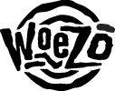

This research area develops digital collections that emphasize human expression. Collections tend to be represented in linear forms, which are cold and impersonal. When we collect sets of information resources based on processes of human expression, we need to develop associational ontologies and browsing schemas that connect form and content.
Sensemaking is the process through which humans put together understanding of related information. Sensemaking has been said to involve changes in cognitive representations during a human information processing task. Collection sensemaking involves understanding a collection of media entities, as a whole. One example of a sensemaking task is to compare the damage from Hurricane Katrina to homes, personal effects, and community buildings in different areas of New Orleans. Connected visual and semantic representations provide perspective to support users involved in collection sensemaking tasks. A zoomable map organizes images based on location at varying scales. Multiscale clusters based on zoom level organize images associated with events. The clusters afford contextualized thumbnail browsing and also maintain uniform information density on the map. Metadata enhances context and memory in the process of collection sensemaking.
ZMICSS: The Katrina/Rita Context
 ZMICSS: The Katrina/Rita Context
ZMICSS: The Katrina/Rita Context
Access to devices that integrate Global Positioning data with image and sound acquisition becomes more common, enabling people to build large collections of locative multimedia. As the size and number of these locative media collections grow, so too does the importance of systems that support collection sensemaking. Media semantics, which include automatically acquired location data, as well as user-supplied annotations, play a key role in these user-centered processes of collection utilization. The system is currently being used to document the location and condition of homes and neighborhoods in the aftermath of Hurricane Katrina.
choreographic buttons
choreographic buttons
Research on human computer interaction involving computer vision-based motion tracking needs to start with the body, and then consider technology. The body is the site of experience. We sense the environment, form understandings, and actuate responses. Movement is an actuated essence of people�s everyday experiences. Movements articulate locomotion, and also convey information regarding emotions and intentions. We used human movement as the basis for designing a collaborative aesthetic design environment. Our intention was to promote social interaction and creative expression. We employed off-the-shelf computer vision technology. Movement became the basis for the choreography of gestures, the development of gesture recognition, and the development of imagery and visualization.
faMailiar
Experiences of intimacy and connectedness through social networks are vital to human sense of well-being. We live in an electronic habitat. Electronic mail functions as a medium of interpersonal exchange. As it accumulates, email data becomes more than a collection of reminders. It is a diary we didn�t know we were keeping, and a potential source of valuable insight into the structure and dynamics of one's social network. Current interfaces do little to help users see patterns of social interaction within email data.
faMailiar is a multiscale email interface that utilizes computed intimacy measures and chronology as parameters for information visualization. Rhythms of intimacy in email experience are made visible as patterns of color and shapes in a zoomable chronological grid. Qualitative user experience data indicates that such an email visualization can provide striking insights into the experience of social connectedness over time. These insights potentially enable users to better manage how they invest time and energy into personal and work relationships, and thus to improve overall sense of well-being.
woezo

Students are prone to experiencing culture shock as they cross boundaries.
On their arrival to the U.S., displaced students from the Third World
often feel isolated, afraid, inferior, and insecure.
The intention of this project is to support these students, as they
adapt to their new cultural context.
Digital collections can serve as a
medium for sharing sensations and experiences, through the form of
personal stories.
Woezo is a collection of stories, designed to
help international students overcome culture shock, as they cross
borders and enter the U.S.
publications